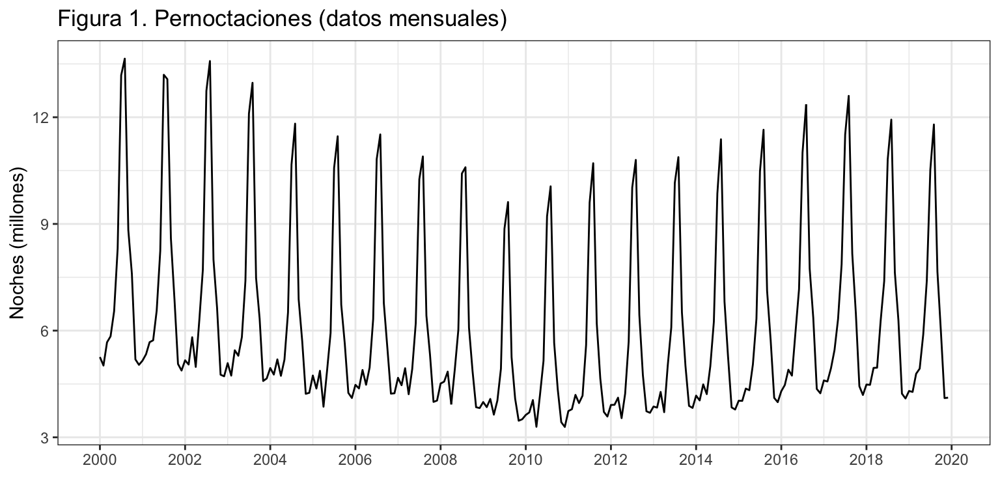
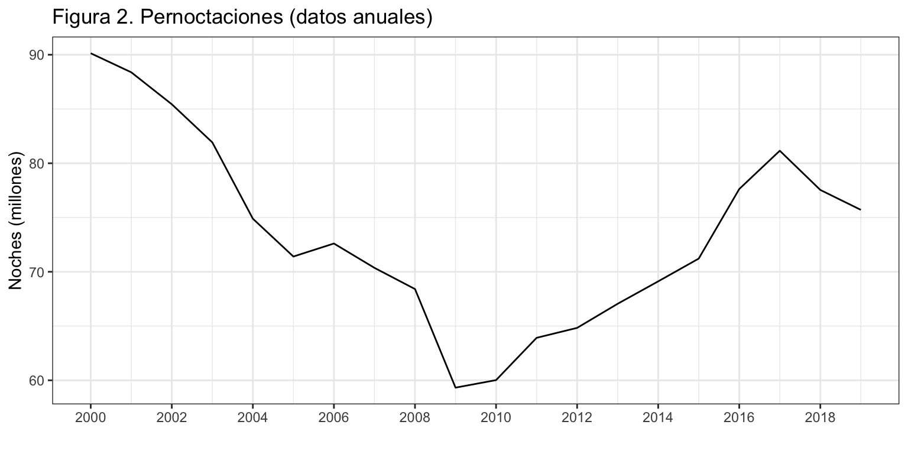
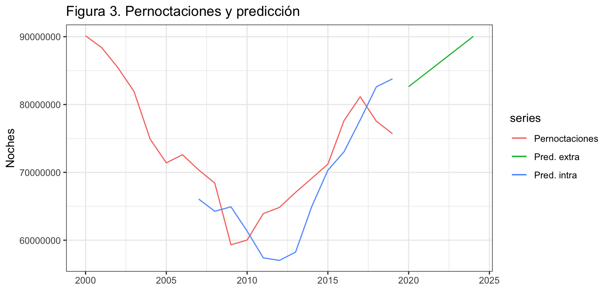
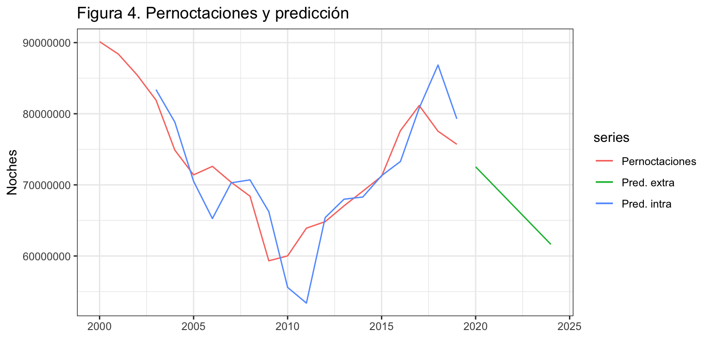

Introducción
Consideremos de nuevo la serie temporal correspondiente al número de pernoctaciones que los turistas extranjeros realizan en España en alojamientos turísticos autorizados (que llamaremos Pernoctaciones en adelante). Esta serie está disponible en Eurostat desde enero de 2000 hasta diciembre de 2019, un total de 20 años y 240 observaciones.
La serie presenta tendencia decreciente hasta finales de la primera década del presente siglo y luego creciente hasta los dos últimos años. La estacionalidad de orden 12 esta determinada por las vacaciones de verano. El esquema es multiplicativo.

Predicción por el método de las medias móviles
Vamos ajustar y predecir la serie de pernoctaciones por el método de las medias móviles. Como este método asume que la serie no tiene estacionalidad, vamos a trabajar con la serie anualizada de pernoctaciones, donde cada dato será el número de pernoctaciones anuales.

Dado que la serie tiene tendencia, usaremos las dobles medias móviles para estimar el nivel y la pendiente, y a partir de ellas obtener la serie ajustada y las predicciones.
R no nos proporciona una función específica para aplicar el método de las dobles medias móviles, así usaremos nuestra función dmm.
dmm <- function(x, r = 3, h = 5) {
z <- NULL
z$x <- x
z$orden = r
TT <- length(x)
inicio <- start(x)
frecuencia <-frequency(x)
z$mm1 <- stats::filter(x, rep(1/r, r), side = 1)
z$mm2 <- stats::filter(z$mm1, rep(1/r, r), side = 1)
z$l <- 2 * z$mm1 - z$mm2
z$b <- 2 * (z$mm1 - z$mm2) / (r - 1)
z$fitted <- ts(c(NA, z$l[-TT] + z$b[-TT]), start = inicio, freq = frecuencia)
z$mean <- ts(z$l[TT] + (1:h) * z$b[TT], start = time(x)[TT] + 1/frecuencia, freq = frecuencia)
z$residuals <- x - z$fitted
class(z) <- "forecast"
z
}
Veamos primero los resultados asumiendo un orden de la media móvil de 4 años (\(r = 4\)) y realizando una predicción para los próximos 5 años (h = 5). La figura 3 muestra la serie Pernoctaciones, la serie ajustada y la predicción.

Un desastre. El orden es muy elevado así que perdemos 7 observaciones al inicio, le cuesta capturar el primer cambio de tendencia –en la serie original tiene lugar en 2010 y en la serie estimada en 2013– y las predicciones no tienen en cuenta el descenso en las pernoctaciones ocurrido en los dos últimos años.
ME RMSE MAE MPE MAPE MASE ACF1
Training set 1890816 5489300 4980144 2.777245 7.218397 1.564304 0.4045912
Así, no sorprenden los valores de los criterios de bondad de ajuste: un error medio muy elevado, indicativo de sesgo en las predicciones; un error porcentual de 7.2%, algo elevado; y un error medio (RMSE) de casi 5.5 millones de pernoctaciones. Estos errores son superiores a los obtenidos con el método Ingenuo I (RMSE = 3.8 millones de pernoctaciones; MAPE = 4.4%).
Selección del orden y predicción usando origen de predicción móvil
Vamos a mejorar nuestra primera aproximación usando el método del origen de predicción móvil para identificar el orden óptimo de la doble media móvil según que la predicción sea de 1 a 5 años.
Consideraremos órdenes desde 2 hasta 5, y asumiremos que el mínimo número de años para hacer las estimaciones es de 10
k <- 10 #Minimo numero de datos para estimar
h <- 5 #Horizonte de las prediciciones
TT <- length(Pernoctaciones) #Longitud serie
s <- TT - k - h #Total de estimaciones
MAPE <- matrix(NA, nrow = 4, ncol = 5)
rownames(MAPE) <- 2:5
colnames(MAPE) <- 1:h
for (r in 2:5) {
tmpMape <- matrix(NA, s + 1, h)
for (i in 0:s) {
train.set <- subset(Pernoctaciones, start = i + 1, end = i + k)
test.set <- subset(Pernoctaciones, start = i + k + 1, end = i + k + h)
fit <- dmm(train.set, r = r, h = 5)
tmpMape[i + 1, ] <- 100*abs(test.set - fit$mean)/test.set
}
MAPE[r - 1, ] <- colMeans(tmpMape)
}
MAPE
1 2 3 4 5
2 4.576006 9.317405 13.75554 16.28391 19.62471
3 5.403146 10.729274 15.30481 18.93873 22.79611
4 7.479058 12.629757 17.91514 21.88697 25.22261
5 9.195199 15.659027 21.44871 26.06681 29.72018
En la tabla previa, cada fila hace referencia a un orden de la doble media móvil desde 2 hasta 5; y cada columna hace referencia a un horizonte temporal de predicción. Con independencia del horizonte temporal de predicción considerado, el error se hace mínimo para un orden de las medias móviles de 2. Además, el error para predicciones extra-muestrales es solo aceptable a un año vista.
La figura 4 muestra la serie Pernoctaciones, la previsiones intra-muestrales y las previsiones extra-muestrales para el orden óptimo de 2. Observa como ahora la doble media móvil captura rápidamente los dos cambios de tendencia, aunque sigue yendo con un poco de retraso. Además, las predicciones están en consonancia con la tendencia de las últimas observaciones.

Comparación con el método Ingenuo para series con estacionalidad
Podemos ahora comparar la calidad de las previsiones extra-muestrales obtenidas con la doble media móvil de orden 2 y el método Ingenuo I.
A un año vista, el error de previsión con el método Ingenuo I es notablemente inferior al obtenido con la doble media móvil (3% y 4.6%, respectivamente). Sin embargo, para previsiones a dos o más años vista la doble media móvil bate al método Ingenuo I. Por ejemplo, a 5 años vista el primero tiene un error del 9.2%, mientras que el segundo tiene un error del 15%.
Es decir, la elección del mejor método dependerá del horizonte de previsión en el que estemos interesados.
LS0tCnRpdGxlOiAiUGVybm9jdGFjaW9uZXMgZW4gYWxvamFtaWVudG9zIHR1csOtc3RpY29zIGRlIHR1cmlzdGFzIGV4dHJhbmplcm9zIgpzdWJ0aXRsZTogIk1lZGlhcyBtw7N2aWxlcyIKYXV0aG9yOiAiSXbDoW4gQXJyaWJhcyAoRGVwdG8uIEFuw6FsaXNpcyBFY29uw7NtaWNvLiBVbml2ZXJzaXRhdCBkZSBWYWzDqG5jaWEpIgpvdXRwdXQ6IAogIGh0bWxfZG9jdW1lbnQ6CiAgICB0aGVtZTogY2VydWxlYW4KICAgIGhpZ2hsaWdodDogcHlnbWVudHMgCiAgICBmaWdfY2FwdGlvbjogZmFsc2UKICAgIGRmX3ByaW50OiBrYWJsZQogICAgdG9jOiB0cnVlCiAgICB0b2NfZGVwdGg6IDIKICAgIG51bWJlcl9zZWN0aW9uczogdHJ1ZQogICAgc2VsZl9jb250YWluZWQ6IHRydWUKICAgIGNvZGVfZG93bmxvYWQ6IHRydWUKLS0tCgpgYGB7ciBjaHVua19zZXR1cCwgZWNobyA9IEZBTFNFfQprbml0cjo6b3B0c19jaHVuayRzZXQod2FybmluZyA9IEZBTFNFLCAKICAgICAgICAgICAgICAgICAgICAgIG1lc3NhZ2UgPSBGQUxTRSwgCiAgICAgICAgICAgICAgICAgICAgICBjb21tZW50ID0gIiIsCiAgICAgICAgICAgICAgICAgICAgICBmaWcuYWxpZ24gPSAiY2VudGVyIiwgCiAgICAgICAgICAgICAgICAgICAgICBmaWcuc2hvdyA9ICJob2xkIiwKICAgICAgICAgICAgICAgICAgICAgIGZpZy5oZWlnaHQgPSA0LAogICAgICAgICAgICAgICAgICAgICAgZmlnLndpZHRoID0gOCwKICAgICAgICAgICAgICAgICAgICAgIG91dC53aWR0aCA9ICI4MCUiKSAKYGBgCgpgYGB7ciBvcHRpb25zX3NldHVwLCBlY2hvID0gRkFMU0V9Cm9wdGlvbnMoc2NpcGVuID0gOTk5KSAjLSBwYXJhIHF1aXRhciBsYSBub3RhY2lvbiBjaWVudGlmaWNhCmBgYAoKYGBge3IgbGlicmVyaWFzLCBlY2hvID0gRkFMU0V9CmxpYnJhcnkoZm9yZWNhc3QpCmxpYnJhcnkoZ2dwbG90Mik7IHRoZW1lX3NldCh0aGVtZV9idygpKQpsaWJyYXJ5KGdyaWRFeHRyYSkKbGlicmFyeShncmlkKQpgYGAKClwKXAoKIyBJbnRyb2R1Y2Npw7NuCgpDb25zaWRlcmVtb3MgZGUgbnVldm8gbGEgc2VyaWUgdGVtcG9yYWwgY29ycmVzcG9uZGllbnRlIGFsIG7Dum1lcm8gZGUgcGVybm9jdGFjaW9uZXMgcXVlIGxvcyB0dXJpc3RhcyBleHRyYW5qZXJvcyByZWFsaXphbiBlbiBFc3Bhw7FhIGVuIGFsb2phbWllbnRvcyB0dXLDrXN0aWNvcyBhdXRvcml6YWRvcyAocXVlIGxsYW1hcmVtb3MgUGVybm9jdGFjaW9uZXMgZW4gYWRlbGFudGUpLiBFc3RhIHNlcmllIGVzdMOhIGRpc3BvbmlibGUgZW4gRXVyb3N0YXQgZGVzZGUgZW5lcm8gZGUgMjAwMCBoYXN0YSBkaWNpZW1icmUgZGUgMjAxOSwgdW4gdG90YWwgZGUgMjAgYcOxb3MgeSAyNDAgb2JzZXJ2YWNpb25lcy4KCkxhIHNlcmllIHByZXNlbnRhIHRlbmRlbmNpYSBkZWNyZWNpZW50ZSBoYXN0YSBmaW5hbGVzIGRlIGxhIHByaW1lcmEgZMOpY2FkYSBkZWwgcHJlc2VudGUgc2lnbG8geSBsdWVnbyBjcmVjaWVudGUgaGFzdGEgbG9zIGRvcyDDumx0aW1vcyBhw7Fvcy4gTGEgZXN0YWNpb25hbGlkYWQgZGUgb3JkZW4gMTIgZXN0YSBkZXRlcm1pbmFkYSBwb3IgbGFzIHZhY2FjaW9uZXMgZGUgdmVyYW5vLiBFbCBlc3F1ZW1hIGVzIG11bHRpcGxpY2F0aXZvLgoKYGBge3J9ClBlcm5vY3RhY2lvbmVzIDwtIHJlYWQuY3N2MigiLi9zZXJpZXMvUGVybm9jdGFjaW9uZXMuY3N2IiwgaGVhZGVyID0gVFJVRSkKUGVybm9jdGFjaW9uZXMgPC0gdHMoUGVybm9jdGFjaW9uZXNbLDJdLCBzdGFydCA9IDIwMDAsIGZyZXF1ZW5jeSA9IDEyKQpgYGAKCmBgYHtyfQphdXRvcGxvdChQZXJub2N0YWNpb25lcy8xMDAwMDAwLAogICAgICAgICB4bGFiID0gIiIsCiAgICAgICAgIHlsYWIgPSAiTm9jaGVzIChtaWxsb25lcykiLAogICAgICAgICBtYWluID0gIkZpZ3VyYSAxLiBQZXJub2N0YWNpb25lcyAoZGF0b3MgbWVuc3VhbGVzKSIpICsKICBzY2FsZV94X2NvbnRpbnVvdXMoYnJlYWtzPSBzZXEoMjAwMCwgMjAyMCwgMikpICAKYGBgCgpcClwKCiMgUHJlZGljY2nDs24gcG9yIGVsIG3DqXRvZG8gZGUgbGFzIG1lZGlhcyBtw7N2aWxlcwoKVmFtb3MgYWp1c3RhciB5IHByZWRlY2lyIGxhIHNlcmllIGRlIHBlcm5vY3RhY2lvbmVzIHBvciBlbCBtw6l0b2RvIGRlIGxhcyBtZWRpYXMgbcOzdmlsZXMuIENvbW8gZXN0ZSBtw6l0b2RvIGFzdW1lIHF1ZSBsYSBzZXJpZSBubyB0aWVuZSBlc3RhY2lvbmFsaWRhZCwgdmFtb3MgYSB0cmFiYWphciBjb24gbGEgc2VyaWUgYW51YWxpemFkYSBkZSBwZXJub2N0YWNpb25lcywgZG9uZGUgY2FkYSBkYXRvIHNlcsOhIGVsIG7Dum1lcm8gZGUgcGVybm9jdGFjaW9uZXMgYW51YWxlcy4KCmBgYHtyfQpQZXJub2N0YWNpb25lcyA8LSBhZ2dyZWdhdGUoUGVybm9jdGFjaW9uZXMsIEZVTiA9IHN1bSkKYGBgCgoKYGBge3J9CmF1dG9wbG90KFBlcm5vY3RhY2lvbmVzLzEwMDAwMDAsCiAgICAgICAgIHhsYWIgPSAiIiwKICAgICAgICAgeWxhYiA9ICJOb2NoZXMgKG1pbGxvbmVzKSIsCiAgICAgICAgIG1haW4gPSAiRmlndXJhIDIuIFBlcm5vY3RhY2lvbmVzIChkYXRvcyBhbnVhbGVzKSIpICsKICBzY2FsZV94X2NvbnRpbnVvdXMoYnJlYWtzPSBzZXEoMjAwMCwgMjAyMCwgMikpICAKYGBgCgpEYWRvIHF1ZSBsYSBzZXJpZSB0aWVuZSB0ZW5kZW5jaWEsIHVzYXJlbW9zIGxhcyBkb2JsZXMgbWVkaWFzIG3Ds3ZpbGVzIHBhcmEgZXN0aW1hciBlbCBuaXZlbCB5IGxhIHBlbmRpZW50ZSwgeSBhIHBhcnRpciBkZSBlbGxhcyBvYnRlbmVyIGxhIHNlcmllIGFqdXN0YWRhIHkgbGFzIHByZWRpY2Npb25lcy4KCmBSYCBubyBub3MgcHJvcG9yY2lvbmEgdW5hIGZ1bmNpw7NuIGVzcGVjw61maWNhIHBhcmEgYXBsaWNhciBlbCBtw6l0b2RvIGRlIGxhcyBkb2JsZXMgbWVkaWFzIG3Ds3ZpbGVzLCBhc8OtIHVzYXJlbW9zIG51ZXN0cmEgZnVuY2nDs24gYGRtbWAuCgpgYGB7cn0KZG1tIDwtIGZ1bmN0aW9uKHgsIHIgPSAzLCBoID0gNSkgewogIHogPC0gTlVMTAogIHokeCA8LSB4CiAgeiRvcmRlbiA9IHIKICAKICBUVCA8LSBsZW5ndGgoeCkKICBpbmljaW8gPC0gc3RhcnQoeCkKICBmcmVjdWVuY2lhIDwtZnJlcXVlbmN5KHgpCiAgCiAgeiRtbTEgPC0gc3RhdHM6OmZpbHRlcih4LCByZXAoMS9yLCByKSwgc2lkZSA9IDEpCiAgeiRtbTIgPC0gc3RhdHM6OmZpbHRlcih6JG1tMSwgcmVwKDEvciwgciksIHNpZGUgPSAxKQogIAogIHokbCA8LSAyICogeiRtbTEgLSB6JG1tMgogIHokYiA8LSAyICogKHokbW0xIC0geiRtbTIpIC8gKHIgLSAxKQogIAogIHokZml0dGVkIDwtIHRzKGMoTkEsIHokbFstVFRdICsgeiRiWy1UVF0pLCBzdGFydCA9IGluaWNpbywgZnJlcSA9IGZyZWN1ZW5jaWEpCiAgeiRtZWFuIDwtIHRzKHokbFtUVF0gKyAoMTpoKSAqIHokYltUVF0sIHN0YXJ0ID0gdGltZSh4KVtUVF0gKyAxL2ZyZWN1ZW5jaWEsIGZyZXEgPSBmcmVjdWVuY2lhKQogIHokcmVzaWR1YWxzIDwtIHggLSB6JGZpdHRlZAogIGNsYXNzKHopIDwtICJmb3JlY2FzdCIKICB6Cn0KYGBgCgpWZWFtb3MgcHJpbWVybyBsb3MgcmVzdWx0YWRvcyBhc3VtaWVuZG8gdW4gb3JkZW4gZGUgbGEgbWVkaWEgbcOzdmlsIGRlIDQgYcOxb3MgKCRyID0gNCQpIHkgcmVhbGl6YW5kbyB1bmEgcHJlZGljY2nDs24gcGFyYSBsb3MgcHLDs3hpbW9zIDUgYcOxb3MgKGBoID0gNWApLiBMYSBmaWd1cmEgMyBtdWVzdHJhIGxhIHNlcmllIFBlcm5vY3RhY2lvbmVzLCBsYSBzZXJpZSBhanVzdGFkYSB5IGxhIHByZWRpY2Npw7NuLgoKYGBge3J9ClBlcm5vY3RhY2lvbmVzUHJlIDwtIGRtbShQZXJub2N0YWNpb25lcywgciA9IDQsIGggPSA1KQphdXRvcGxvdChQZXJub2N0YWNpb25lcywgc2VyaWVzID0gIlBlcm5vY3RhY2lvbmVzIiwKICAgICAgICAgeGxhYiA9ICIiLAogICAgICAgICB5bGFiID0gIk5vY2hlcyIsCiAgICAgICAgIG1haW4gPSAiRmlndXJhIDMuIFBlcm5vY3RhY2lvbmVzIHkgcHJlZGljY2nDs24iKSArCiAgYXV0b2xheWVyKFBlcm5vY3RhY2lvbmVzUHJlJGZpdHRlZCwgc2VyaWVzID0gIlByZWQuIGludHJhIikgKyAKICBhdXRvbGF5ZXIoUGVybm9jdGFjaW9uZXNQcmUkbWVhbiwgc2VyaWVzID0gIlByZWQuIGV4dHJhIikKYGBgCgpVbiBkZXNhc3RyZS4gRWwgb3JkZW4gZXMgbXV5IGVsZXZhZG8gYXPDrSBxdWUgcGVyZGVtb3MgNyBvYnNlcnZhY2lvbmVzIGFsIGluaWNpbywgbGUgY3Vlc3RhIGNhcHR1cmFyIGVsIHByaW1lciBjYW1iaW8gZGUgdGVuZGVuY2lhIC0tZW4gbGEgc2VyaWUgb3JpZ2luYWwgdGllbmUgbHVnYXIgZW4gMjAxMCB5IGVuIGxhIHNlcmllIGVzdGltYWRhIGVuIDIwMTMtLSB5IGxhcyBwcmVkaWNjaW9uZXMgbm8gdGllbmVuIGVuIGN1ZW50YSBlbCBkZXNjZW5zbyBlbiBsYXMgcGVybm9jdGFjaW9uZXMgb2N1cnJpZG8gZW4gbG9zIGRvcyDDumx0aW1vcyBhw7Fvcy4KCmBgYHtyfQphY2N1cmFjeShQZXJub2N0YWNpb25lc1ByZSkKYGBgCgpBc8OtLCBubyBzb3JwcmVuZGVuIGxvcyB2YWxvcmVzIGRlIGxvcyBjcml0ZXJpb3MgZGUgYm9uZGFkIGRlIGFqdXN0ZTogdW4gZXJyb3IgbWVkaW8gbXV5IGVsZXZhZG8sIGluZGljYXRpdm8gZGUgc2VzZ28gZW4gbGFzIHByZWRpY2Npb25lczsgdW4gZXJyb3IgcG9yY2VudHVhbCBkZSA3LjIlLCBhbGdvIGVsZXZhZG87IHkgdW4gZXJyb3IgbWVkaW8gKFJNU0UpIGRlIGNhc2kgNS41IG1pbGxvbmVzIGRlIHBlcm5vY3RhY2lvbmVzLiBFc3RvcyBlcnJvcmVzIHNvbiBzdXBlcmlvcmVzIGEgbG9zIG9idGVuaWRvcyBjb24gZWwgbcOpdG9kbyBJbmdlbnVvIEkgKFJNU0UgPSAzLjggbWlsbG9uZXMgZGUgcGVybm9jdGFjaW9uZXM7IE1BUEUgPSA0LjQlKS4KClwKXAoKIyBTZWxlY2Npw7NuIGRlbCBvcmRlbiB5IHByZWRpY2Npw7NuIHVzYW5kbyBvcmlnZW4gZGUgcHJlZGljY2nDs24gbcOzdmlsCgpWYW1vcyBhIG1lam9yYXIgbnVlc3RyYSBwcmltZXJhIGFwcm94aW1hY2nDs24gdXNhbmRvIGVsIG3DqXRvZG8gZGVsIG9yaWdlbiBkZSBwcmVkaWNjacOzbiBtw7N2aWwgcGFyYSBpZGVudGlmaWNhciBlbCBvcmRlbiDDs3B0aW1vIGRlIGxhIGRvYmxlIG1lZGlhIG3Ds3ZpbCBzZWfDum4gcXVlIGxhIHByZWRpY2Npw7NuIHNlYSBkZSAxIGEgNSBhw7Fvcy4gCgpDb25zaWRlcmFyZW1vcyDDs3JkZW5lcyBkZXNkZSAyIGhhc3RhIDUsIHkgYXN1bWlyZW1vcyBxdWUgZWwgbcOtbmltbyBuw7ptZXJvIGRlIGHDsW9zIHBhcmEgaGFjZXIgbGFzIGVzdGltYWNpb25lcyBlcyBkZSAxMAoKYGBge3J9CmsgPC0gMTAgICAgICAgICAgICAgICAgICAgI01pbmltbyBudW1lcm8gZGUgZGF0b3MgcGFyYSBlc3RpbWFyCmggPC0gNSAgICAgICAgICAgICAgICAgICAgI0hvcml6b250ZSBkZSBsYXMgcHJlZGljaWNpb25lcwpUVCA8LSBsZW5ndGgoUGVybm9jdGFjaW9uZXMpICNMb25naXR1ZCBzZXJpZQpzIDwtIFRUIC0gayAtIGggICAgICAgICAgICNUb3RhbCBkZSBlc3RpbWFjaW9uZXMKCk1BUEUgPC0gbWF0cml4KE5BLCBucm93ID0gNCwgbmNvbCA9IDUpCnJvd25hbWVzKE1BUEUpIDwtIDI6NQpjb2xuYW1lcyhNQVBFKSA8LSAxOmgKCmZvciAociBpbiAyOjUpIHsKCiAgdG1wTWFwZSA8LSBtYXRyaXgoTkEsIHMgKyAxLCBoKQogIAogIGZvciAoaSBpbiAwOnMpIHsKICAKICAgIHRyYWluLnNldCA8LSBzdWJzZXQoUGVybm9jdGFjaW9uZXMsIHN0YXJ0ID0gaSArIDEsIGVuZCA9IGkgKyBrKQogICAgdGVzdC5zZXQgPC0gIHN1YnNldChQZXJub2N0YWNpb25lcywgc3RhcnQgPSBpICsgayArIDEsIGVuZCA9IGkgKyBrICsgaCkKICAgIAogICAgZml0IDwtIGRtbSh0cmFpbi5zZXQsIHIgPSByLCBoID0gNSkKICAgIHRtcE1hcGVbaSArIDEsIF0gPC0gMTAwKmFicyh0ZXN0LnNldCAtIGZpdCRtZWFuKS90ZXN0LnNldAogIH0KICBNQVBFW3IgLSAxLCBdIDwtIGNvbE1lYW5zKHRtcE1hcGUpCn0KTUFQRQpgYGAKCkVuIGxhIHRhYmxhIHByZXZpYSwgY2FkYSBmaWxhIGhhY2UgcmVmZXJlbmNpYSBhIHVuIG9yZGVuIGRlIGxhIGRvYmxlIG1lZGlhIG3Ds3ZpbCBkZXNkZSAyIGhhc3RhIDU7IHkgY2FkYSBjb2x1bW5hIGhhY2UgcmVmZXJlbmNpYSBhIHVuIGhvcml6b250ZSB0ZW1wb3JhbCBkZSBwcmVkaWNjacOzbi4gQ29uIGluZGVwZW5kZW5jaWEgZGVsIGhvcml6b250ZSB0ZW1wb3JhbCBkZSBwcmVkaWNjacOzbiBjb25zaWRlcmFkbywgZWwgZXJyb3Igc2UgaGFjZSBtw61uaW1vIHBhcmEgdW4gb3JkZW4gZGUgbGFzIG1lZGlhcyBtw7N2aWxlcyBkZSAyLiBBZGVtw6FzLCBlbCBlcnJvciBwYXJhIHByZWRpY2Npb25lcyBleHRyYS1tdWVzdHJhbGVzIGVzIHNvbG8gYWNlcHRhYmxlIGEgdW4gYcOxbyB2aXN0YS4KCkxhIGZpZ3VyYSA0IG11ZXN0cmEgbGEgc2VyaWUgUGVybm9jdGFjaW9uZXMsIGxhIHByZXZpc2lvbmVzIGludHJhLW11ZXN0cmFsZXMgeSBsYXMgcHJldmlzaW9uZXMgZXh0cmEtbXVlc3RyYWxlcyBwYXJhIGVsIG9yZGVuIMOzcHRpbW8gZGUgMi4gT2JzZXJ2YSBjb21vIGFob3JhIGxhIGRvYmxlIG1lZGlhIG3Ds3ZpbCBjYXB0dXJhIHLDoXBpZGFtZW50ZSBsb3MgZG9zIGNhbWJpb3MgZGUgdGVuZGVuY2lhLCBhdW5xdWUgc2lndWUgeWVuZG8gY29uIHVuIHBvY28gZGUgcmV0cmFzby4gQWRlbcOhcywgbGFzIHByZWRpY2Npb25lcyBlc3TDoW4gZW4gY29uc29uYW5jaWEgY29uIGxhIHRlbmRlbmNpYSBkZSBsYXMgw7psdGltYXMgb2JzZXJ2YWNpb25lcy4KCmBgYHtyfQpQZXJub2N0YWNpb25lc1ByZSA8LSBkbW0oUGVybm9jdGFjaW9uZXMsIHIgPSAyLCBoID0gNSkKYXV0b3Bsb3QoUGVybm9jdGFjaW9uZXMsIHNlcmllcyA9ICJQZXJub2N0YWNpb25lcyIsCiAgICAgICAgIHhsYWIgPSAiIiwKICAgICAgICAgeWxhYiA9ICJOb2NoZXMiLAogICAgICAgICBtYWluID0gIkZpZ3VyYSA0LiBQZXJub2N0YWNpb25lcyB5IHByZWRpY2Npw7NuIikgKwogIGF1dG9sYXllcihQZXJub2N0YWNpb25lc1ByZSRmaXR0ZWQsIHNlcmllcyA9ICJQcmVkLiBpbnRyYSIpICsgCiAgYXV0b2xheWVyKFBlcm5vY3RhY2lvbmVzUHJlJG1lYW4sIHNlcmllcyA9ICJQcmVkLiBleHRyYSIpCmBgYAoKXApcCgoqKkNvbXBhcmFjacOzbiBjb24gZWwgbcOpdG9kbyBJbmdlbnVvIHBhcmEgc2VyaWVzIGNvbiBlc3RhY2lvbmFsaWRhZCoqCgpQb2RlbW9zIGFob3JhIGNvbXBhcmFyIGxhIGNhbGlkYWQgZGUgbGFzIHByZXZpc2lvbmVzIGV4dHJhLW11ZXN0cmFsZXMgb2J0ZW5pZGFzIGNvbiBsYSBkb2JsZSBtZWRpYSBtw7N2aWwgZGUgb3JkZW4gMiB5IGVsIG3DqXRvZG8gSW5nZW51byBJLgoKQSB1biBhw7FvIHZpc3RhLCBlbCBlcnJvciBkZSBwcmV2aXNpw7NuIGNvbiBlbCBtw6l0b2RvIEluZ2VudW8gSSBlcyBub3RhYmxlbWVudGUgaW5mZXJpb3IgYWwgb2J0ZW5pZG8gY29uIGxhIGRvYmxlIG1lZGlhIG3Ds3ZpbCAoMyUgeSA0LjYlLCByZXNwZWN0aXZhbWVudGUpLiBTaW4gZW1iYXJnbywgcGFyYSBwcmV2aXNpb25lcyBhIGRvcyBvIG3DoXMgYcOxb3MgdmlzdGEgbGEgZG9ibGUgbWVkaWEgbcOzdmlsIGJhdGUgYWwgbcOpdG9kbyBJbmdlbnVvIEkuIFBvciBlamVtcGxvLCBhIDUgYcOxb3MgdmlzdGEgZWwgcHJpbWVybyB0aWVuZSB1biBlcnJvciBkZWwgOS4yJSwgbWllbnRyYXMgcXVlIGVsIHNlZ3VuZG8gdGllbmUgdW4gZXJyb3IgZGVsIDE1JS4KCkVzIGRlY2lyLCBsYSBlbGVjY2nDs24gZGVsIF9tZWpvcl8gbcOpdG9kbyBkZXBlbmRlcsOhIGRlbCBob3Jpem9udGUgZGUgcHJldmlzacOzbiBlbiBlbCBxdWUgZXN0ZW1vcyBpbnRlcmVzYWRvcy4KCgpcClwKXApcCgo=